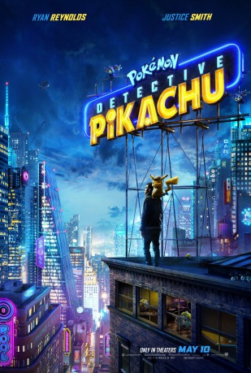

#11614 Pokémon Meisterdetektiv Pikachu
Alternativ: Pokemon Detective Pikachu (Englischer Titel)
 
 IMDB-Wertung: 6.7 / 10
IMDB-Wertung: 6.7 / 10  Metascore: 53
Metascore: 53 
The story begins when ace detective Harry Goodman goes mysteriously missing, prompting his 21-year-old son Tim to find out what happened. Aiding in the investigation is Harry's former Pokémon partner, Detective Pikachu: a hilariously wise-cracking, adorable super-sleuth who is a puzzlement even to himself. Finding that they are uniquely equipped to communicate with one another, Tim and Pikachu join forces on a thrilling adventure to unravel the tangled mystery. Chasing clues together through the neon-lit streets of Ryme City--a sprawling, modern metropolis where humans and Pokémon live side by side in a hyper-realistic live-action world--they encounter a diverse cast of Pokémon characters and uncover a shocking plot that could destroy this peaceful co-existence and threaten the whole Pokémon universe.
Jahr: 2019
Dauer: 104 Minuten
FSK: 6
Land: USA Studio: Warner Bros.Tonspuren: DTS - ,
Untertitel: Deutsch, Englisch,
Auflösung: 1080p (1920x800) Größe: 10854 MB
Genre: Action, Sci-Fi, Komödie, Abenteuer, Familie, Mystery
Regisseur: Rob Letterman
Drehbuch: Dan Hernandez, Benji Samit, Rob Letterman, Derek Connolly, Dan Hernandez
Soundtrack: Henry Jackman
Darsteller:
 Ryan Reynolds als Detective Pikachu
Ryan Reynolds als Detective Pikachu Justice Smith als Tim Goodman
Justice Smith als Tim Goodman Kathryn Newton als Lucy Stevens
Kathryn Newton als Lucy Stevens Bill Nighy als Howard Clifford
Bill Nighy als Howard Clifford Ken Watanabe als Lieutenant Hide Yoshida
Ken Watanabe als Lieutenant Hide Yoshida- Chris Geere als Roger Clifford
- Suki Waterhouse als Ms. Norman
- Josette Simon als Grams
- Alejandro De Mesa als Bartender
- Rita Ora als Dr. Ann Laurent
 Karan Soni als Jack
Karan Soni als Jack- Max Fincham als Young Tim Goodman
- Simone Ashley als Girlfriend
- Edward Davis als Boyfriend
- Diplo als DJ
- Omar Chaparro als Sebastian
- Kadiff Kirwan als Mayor
- Rina Hoshino als Mewtwo
- Kotaro Watanabe als Mewtwo
 Ikue Ôtani als Pikachu
Ikue Ôtani als Pikachu Sofia Abbasi als Parade Attendee / Ryme City Citizen (uncredited)
Sofia Abbasi als Parade Attendee / Ryme City Citizen (uncredited)- Omar Alboukharey als Passerby (uncredited)
 Lasco Atkins als Passerby (uncredited)
Lasco Atkins als Passerby (uncredited)- Priyanga Burford als Passenger (uncredited)
- Georgie Carter als Best Friend (uncredited)
- Benjamin Coakley als Business Man (uncredited)
 Bern Collaço als CNM Reporter (uncredited)
Bern Collaço als CNM Reporter (uncredited)- Robert Cox als Snorlax Balloon Holder (uncredited)
- Rob Delaney als (uncredited)
 Daniel Eghan als CNN Reporter (uncredited)
Daniel Eghan als CNN Reporter (uncredited)- Amor Evans als Rainbow Girl / Sebastian's Gang (uncredited)
 Adrian Grant als Dignitary (uncredited)
Adrian Grant als Dignitary (uncredited) Fiona Hardingham als Arrival Video Narrator (uncredited)
Fiona Hardingham als Arrival Video Narrator (uncredited) Ruth Horrocks als Parade Attendee (uncredited)
Ruth Horrocks als Parade Attendee (uncredited)- Gurnita Kaur Kahlon als Parade Onlooker (uncredited)
- Paul Kitson als Harry Goodman (uncredited)
- Alex Klaus als Police Commissioner (uncredited)
 Nina Kumar als Parade / Train Passenger (uncredited)
Nina Kumar als Parade / Train Passenger (uncredited)- Armani La Wong als Roundhouse Audience (uncredited)
- Géraldine Lamarre als Street Fashion Girl (uncredited)
 Rachael Lillis als Jigglypuff (archive sound) (uncredited)
Rachael Lillis als Jigglypuff (archive sound) (uncredited)- Jordan Long als Driver (uncredited)
- Peter Parker Mensah als Roundhouse Audience (uncredited)
- Abbie Murphy als Cynthia McMaster (uncredited)
- Colin Murtagh als Paramedic (uncredited)
- Emily Ng als Office Worker (uncredited)
- Tyler Oakley als Roundhouse Spectator (uncredited)
- Savannah Pages als Girl 2 (uncredited)
 Jag Patel als Dignitary (uncredited)
Jag Patel als Dignitary (uncredited) Jacqueline Ramnarine als Spectator Watching the Match (uncredited)
Jacqueline Ramnarine als Spectator Watching the Match (uncredited)
Datei: X:\Kinder Anime\Pokémon\Pokémon Meisterdetektiv Pikachu (2019, FSK6, 1920x800).mkv seit 13.08.2019
Festplatte: Kinder-Filme+Trick
 Es gibt insgesamt 23 Filme in der Gruppe 'Kinder Anime\Pokémon'
Es gibt insgesamt 23 Filme in der Gruppe 'Kinder Anime\Pokémon'